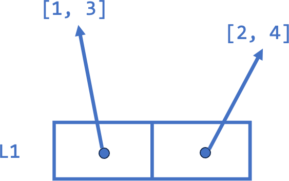
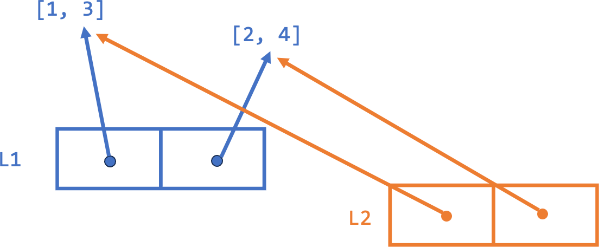
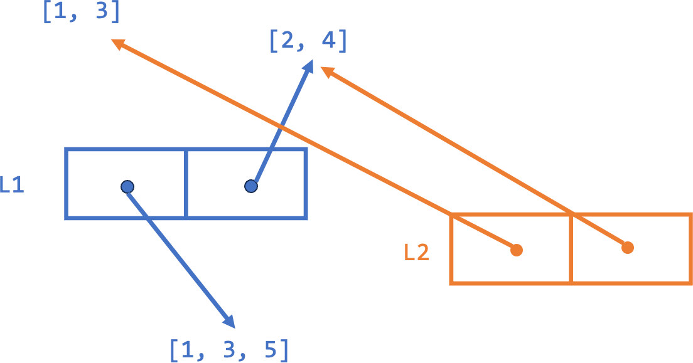
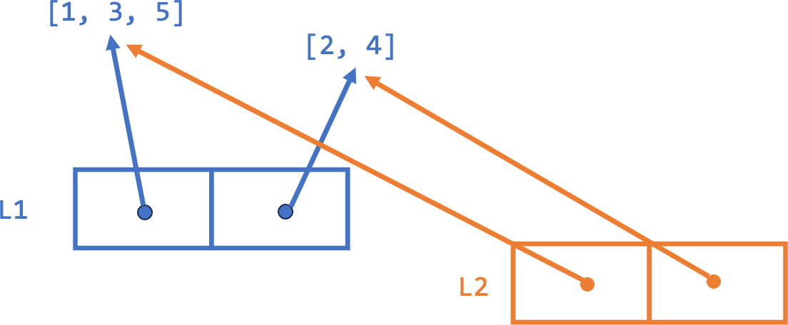

Cours 4
Une liste Python est une structure de données qui permet de regrouper des objets de manière ordonnée, comme un tuple. Mais à la différence des tuple, les listes sont mutables : on peut les modifier après leur création.
On déclare une liste avec des crochets droits.
Remarque. Les éléments d’une liste n’ont pas besoin d’être du même type… mais une bonne pratique en Python est que les listes ne contiennent que des éléments du même type.
Comme les tuple et les str, les listes sont indexables. Cela fonctionne exactement comme sur les tuple : L[0] donne le premier élément.
Remarque. L’indexage en Python peut être plus sophistiqué : indices négatifs, tranches, pas, etc. Voir cette page pour plus de détails.
Les listes sont donc aussi itérables: une boucle for parcourt les éléments dans l’ordre.
Remarque. On peut accéder à la longueur d’une liste avec la fonction len().
On peut vérifier l’appartenance d’un élément à une liste avec le mot-clé in.
in teste l’appartenance : x in L s’évalue à True si x est un des éléments de L, exactement comme pour les str et les tuple.+, et répéter une liste avec *. Ces opérations ne modifient ni l’une ni l’autre des listes de départ : elles créent une nouvelle liste.L.copy() crée elle aussi une nouvelle liste, contenant les mêmes éléments que L.Remarque. La concaténation fonctionne de la même manière pour les tuple et les str. Nous reviendrons en fin de cours sur ce que « nouvelle liste » signifie exactement.
Les listes sont notre premier exemple d’objets mutables en Python, c’est-à-dire qu’on peut les modifier après leur création.
tuple, on peut effectuer des opérations d’écriture sur une liste :
Remarque. Comme ces opérations modifient l’objet lui-même, elles peuvent avoir des conséquences inattendues si plusieurs variables font référence au même objet !
On peut modifier l’élément d’indice i d’une liste L avec l’instruction L[i] = nouvelle_valeur.
Remarque. Si on essaye de modifier de la même manière un élément d’un tuple, une erreur est générée.
La méthode append permet de rajouter un élément à la fin d’une liste.
append sur une liste L, on utilise la syntaxe L.append(valeur).Remarque. Une manière courante de créer une liste est de commencer par une liste vide et de la faire grandir avec des append successifs dans une boucle for.
La méthode insert(i, x) appliquée sur la liste L permet d’y insérer l’élément x à l’indice i : L.insert(i, x).
i sont décalés vers la droite. L’élément qui était à l’indice i est maintenant à l’indice i+1.Remarque. Si on appelle insert avec un index trop grand, Python insère l’élément à la fin de la liste. Pour insérer un élément en tête de liste, on utilise L.insert(0, val).
La méthode pop permet d’enlever un élément de la fin d’une liste. Elle modifie la liste et retourne l’élément enlevé.
pop peut aussi prendre un indice comme argument : L.pop(i) enlève l’élément à l’indice i et décale les éléments suivants vers la gauche.
On peut enlever un élément de la liste selon sa valeur au lieu de son indice.
L.remove(x) enlève le premier élément de valeur x dans la liste L, si un tel élément existe. Elle retourne None.Remarque. Si on appelle remove avec une valeur qui n’est pas présente dans la liste, Python génère une erreur.
Pour des listes L1 et L2, L1.extend(L2) ajoute tous les éléments de L2 à la fin de L1. Elle modifie donc L1 et laisse L2 telle quelle.
Remarque. Il ne faut pas confondre L1.extend(L2) avec L1 = L1 + L2. Quelle est la différence ?
Attention. Étonnamment, L1 += L2 n’est pas équivalent à L1 = L1 + L2, mais fonctionne exactement comme L1.extend(L2). Dans le doute, n’utilisez pas += ou *= sur des objets mutables.
str, tuple, listes, …) :
len retourne la longueur, c’est-à-dire le nombre d’éléments ;max et min donnent le maximum et le minimum, s’il existe un ordre sur les valeurs ;t.count(x) retourne le nombre d’occurrences de la valeur x dans t ;t.index(x) retourne le premier indice de t où x apparaît, si un tel indice existe.L.sort() trie la liste L ;L.reverse() inverse l’ordre des éléments de L.Rappel. L2 = L1.copy() crée une nouvelle liste, qui n’est pas le même objet que L1 : les deux évoluent donc de manière indépendante. Pourtant, avec une liste de listes, la copie suit parfois les modifications de L1, et parfois non.
Pour comprendre, il faut réfléchir à la façon dont les listes Python sont implémentées en mémoire.
L1 contient deux références vers les listes [1, 3] et [2, 4] stockées en mémoire : 
L2 copie ces références. Les éléments de L1 et L2 pointent donc vers les mêmes objets : 
L1 est remplacé par une nouvelle référence vers [1, 3, 5], créée ailleurs en mémoire ; celui de L2 est inchangé : 
L1 contient deux références vers les listes [1, 3] et [2, 4] stockées en mémoire : L2 copie ces références. Les éléments de L1 et L2 pointent donc vers les mêmes objets : [1, 3] référencée par le 0e élément de L1 est modifiée. Comme L2[0] référence le même objet, il affiche la même valeur : 
L2 = L1.copy() ou L2 = L1[:], on crée une nouvelle copie de la liste L1, qui contient les mêmes références.Le comportement « bizarre » du second exemple est donc dû au fait que L1 et L2 satisfont la règle (1), et que leurs éléments, étant aussi des listes, satisfont la règle (2). L1 et L2 sont des listes différentes qui contiennent les mêmes références !
Remarque. copy() n’est pas le seul moyen de créer deux listes différentes contenant les mêmes références. L2 = L1 + [2, 3] crée également une nouvelle liste contenant toutes les références de L1, ainsi que deux nouvelles références.
Pour faire une « vraie » copie, ou copie profonde, d’une liste de listes (qui va copier chacune des sous-listes au lieu de pointer vers les mêmes), on utilise la fonction deepcopy du module copy.
Avec copy.deepcopy, les modifications sur les sous-listes de L1 n’affectent pas L2.